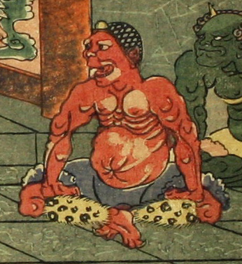

赤い肌の鬼。丸く短い一本の角を持っている。あぐらをかいて鬼の舞いを見物している。頭には網状のかぶりものをし、上半身は裸である。灰色の膝までの袴のようなものを身につけ、毛皮の脚絆をつけている。
著作者：一栄斎芳艶（歌川芳艶）／出典：親書誌：U426_nichibunken_0086：丹波國大江山之圖；タンバノクニオオエヤマノズ／日付：2007／資源識別子：U426_nichibunken_0086_0005_0020
Copyright (c)2010- International Research Center for Japanese Studies, Kyoto, Japan. All rights reserved.